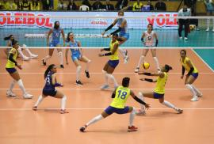
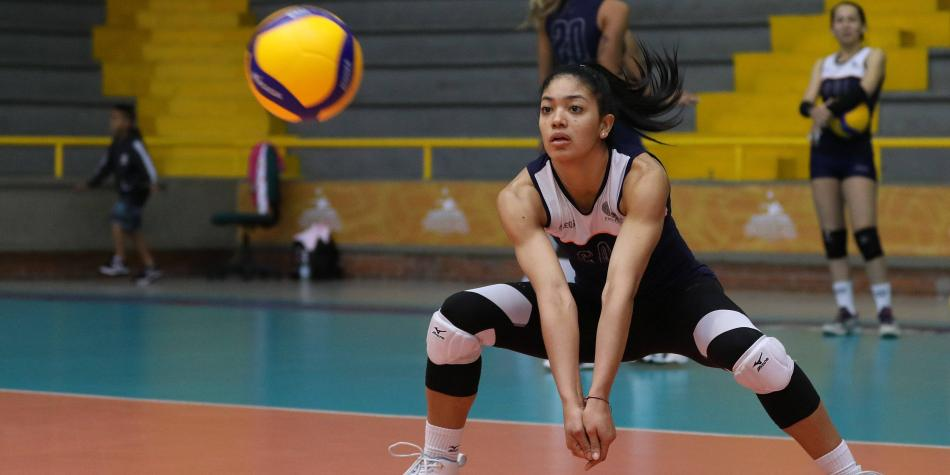
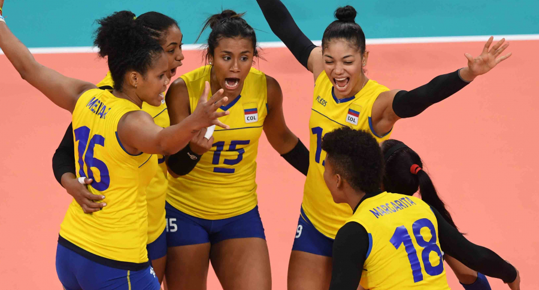

La sede del torneo será Bogotá y desde ya se viven las emociones.
La jugadora de voleibol está en Francia y relata cómo vive estos momentos.
El proceso, por ahora, se detiene, pero se espera que se reanude.
©Gisela González del Alba / Información de la redactora